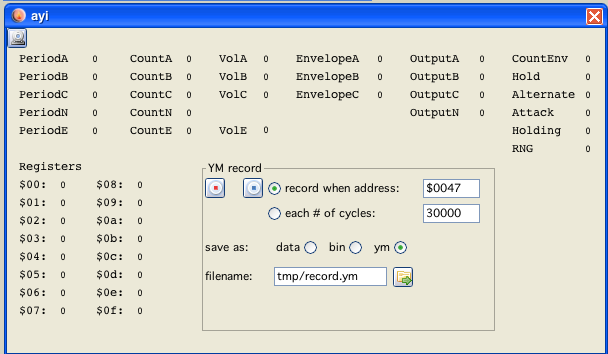

start recording
start recording
 stop recording
stop recording
Only after stopping properly, data files will be saved!

ayi window
Why?
Does this window look different than all the other panels?
Hm, no reason - I did it on a different day, or even in a different month, so I somehow decided to do it this way.
But it is bad, to have different looks in one application, the poor users...?
Yep... I know. Still. learn to live with it, or change the sources yourself!
There is a new option to now save the PSG output (not digital sound as of yet).
YM-files consist of register information of the PSG, which are (best) saved at specific intervals. The file format was developed by Arnaud Carré originally for Atari ST sound files. (See: http://leonard.oxg.free.fr/ymformat.html)
Chosing this option the PSG data will be saved to assembler compatible db-statements, 16 registers per row .
Chosing this option the PSG data will be saved to binary "raw" data 16 registers repeatedly.
You can chose to the intervall at which data shall be recorded by two different options:
record when address = xxxx
For example each time after a subroutine that updates sound registers is called (do sound)
or you can give a fixed timed intervall in 6809 cylce information (30000 cycles = 50Hz)
start recording
stop recording
Only after stopping properly, data files will be saved!